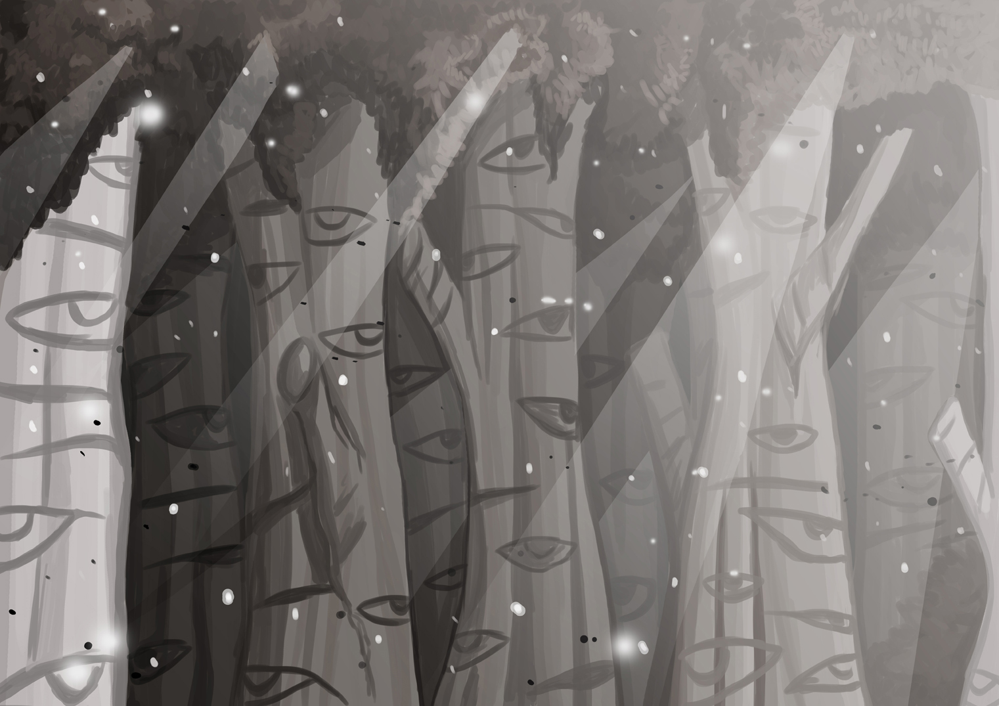
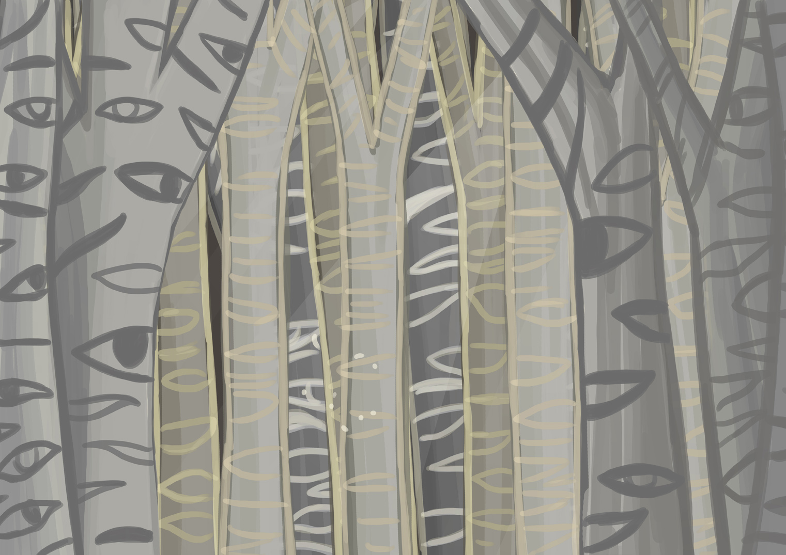

Voor deze twee verschillende type neerslag, heb ik twee verschillende manieren gebruikt om te laten werken. Sneeuw is gebruikt gemaakt met JAVASCRIPT en het as is gemaakt met gebruik van Div containers en CSS.
Parallax

In het verhaal heb ik twee verschillende paralax gemaakt. Ik had de eerste keer op basis van pure CSS gemaakt en Z-Index, alleen kreeg ik alle lagen in een 3D effect wat alleen in JAVASCRIPT opgelost kon worden, wat nu ook gedaan is.
Eyes that Follow

Volgende oplevering.